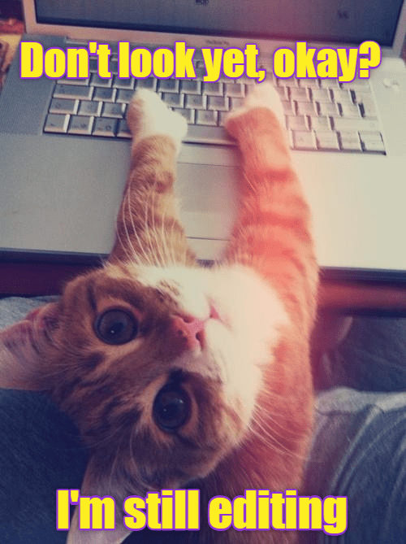

Født 1995. Velkommen til min første nettside siden piczo. Etter å ha jobbet lenge med kundeservice for netthandelbutikker så har jeg startet å irritere meg over programmer og nettsider som ikke er intuitive, dette sier jeg på den beste og mest positive måten. Det å finne et studie som går så sammen med "pet peevene" mine var gull verdt. Det er kjempe spennende og jeg gleder meg til å utvikle meg og lære om dette emnet. Da jeg tenker veldig visuelt og er perfeksjonist på slikt så er jeg spent på å gi slipp på perfeksjonisme og heller være kreativ.
Jeg er engasjert i dyrevern, dette er et område der jeg føler jeg kan gjøre en forskjell hver dag. Ellers er livet et eventyr og man kan lære så utrolig mye. Dette studiet er det eneste jeg har inressert meg i og ønsket for meg selv, så jeg gleder meg masse til de to neste årene.

...
 .